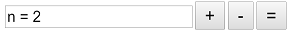

Una variable es un valor numérico real comprendido entre un valor mínimo y un valor máximo y definido por un paso de incrementación.
El valor devuelto por la variable es el valor actual.
e crea una variable con el icono  (tercera fila de iconos de la parte inferior).
(tercera fila de iconos de la parte inferior).
Se puede modificar una variable con la herramienta  de la barra superior.
de la barra superior.
En la caja de diálogo de creación de una variable es posible pedir asociarle un diálogo como abajo.
En ese caso, abajo y a la derecha de la figura se encontrará una caja de diálogo especial que permitirá incrementar la variable (botón +), decrementarla (botón -) o modificar su valor actual (botón =).

.Es posible lograr un diálogo para varias variables.
Una variable puede servir para generar un lugar de puntos conectados, un lugar de puntos no conectados o un un lugar de objetos.
Una variable puede también servir para crear una macro: